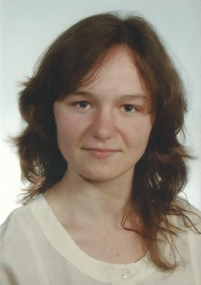

Dane osobowe
Adres
Janika 16b/8
41-806 Zabrze
Telefon
730-744-354
E-mail
pekalak90@gmail.com
Zainteresowania
Język i kultura Japonii, nauka języków obcych, gry komputerowe, pływanie.
Doświadczenie
Capgemini(Katowice)
październik 2014 - do teraz
Biuro rachunkowe Alfa Omega(Zabrze)
wrzesień 2012 - październik 2012
Wykształcenie
Uniwersytet Wrocławski(Wrocław Polska)
październik 2009 - wrzesień 2015
Wydział: Filologiczny
Kierunek: Filologia Romańska
Specjalizacja: Filologia Francuska
Stopień: Licencjat
Osiągnięcia
Języki obce
Francuski
zaawansowany w piśmie i mowie.
Angielski
zaawansowany w piśmie i mowie.
Umiejętności
Microsoft Outlook
wersja 2007, 2010, 2013
System operacyjny Windows7
Link 2013 / Skype for Business
BMC Remedy ITSM
Incident Management Console